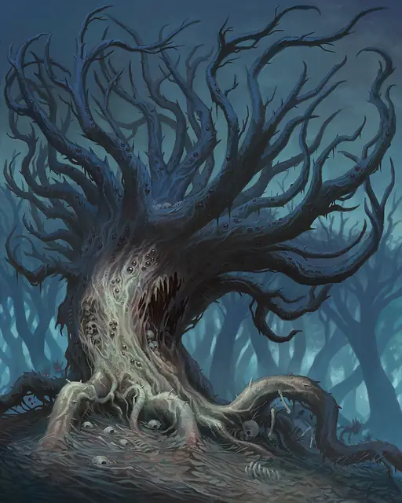

Галтиасская зараза
Gulthias Blight
Громадное Растение, Нейтральное Злое

Класс Защиты 20 Инициатива +5 (15)
Хиты 264 (16к20 + 96)
Скорость 50 футов
| мод | спас | ||
|---|---|---|---|
| СИЛ | 25 | +7 | +7 |
| ЛОВ | 10 | +0 | +0 |
| ТЕЛ | 22 | +6 | +6 |
| мод | спас | ||
|---|---|---|---|
| ИНТ | 10 | +0 | +0 |
| МДР | 18 | +4 | +4 |
| ХАР | 12 | +1 | +1 |
Сопротивление урону Некротический, Огонь
Иммунитеты Оглохший
Чувства пассивное Восприятие 19, Слепое зрение 120 футов
Языки Общий, Друидический
Опасность 16 (15 000 опыта; БВ +5)
Особенности
Заражённые семена. Когда эта зараза завершает Долгий отдых, она выбрасывает 1к6 семян в землю в незанятых пространствах в пределах 30 футов от него. Спустя 24 часа семена вырастают в существ под управлением заразы. Определите появляющееся существо броском 1к8 для каждого семени: это Ветвистая зараза при результатах 1-4, Игольчатая зараза при 5-6 и Вьющаяся зараза при 7-8.
Действия
Мультиатака. Зараза совершает две атаки Размашистым ударом или Залпом колючек в любой комбинации. Оно также использует Вытягивающий жизнь корень.
Размашистый удар. Бросок рукопашной атаки: +12, досягаемость 10 фт. Попадание: 25 (4к8 + 7) Дробящего урона.
Залп колючек. Бросок дальнобойной атаки: +12, дистанция 60/180 фт. Попадание: 20 (3к8 + 7) Колющего урона.
Вытягивающий жизнь корень. Спасбросок Телосложения: Сл 20, одно видимое заразой существо Огромного размера или меньше в 30 футах. Провал: 14 (2к6 + 7) Некротического урона, и цель Схвачена (Сл высвобождения 17) одним из шести корней. Пока длится захват, цель Опутана и получает 14 (4к6) Некротического урона в начале каждого своего хода. Максимум Хитов цели снижается на число, равное полученному Некротическому урону, а заражённое растение восстанавливает такое же количество Хитов.
Бонус мастерства +5
Среда обитания Леса
Сокровища Отсутствуют
Заразы
Растения, порождённые злом
Заразы — нечестивые создания, выросшие из глубоких корней зла. Черты их жутких, скрученных, узловатых тел напоминают человеческие конечности и ужасающие челюсти. Заразы прячутся в зарослях зелени и нападают на всех, кроме Растений.
Хотя эти ужасы способны действовать самостоятельно, обычно они подчиняются породившим их зловещим силам или порочным существам, обуздавшим силу природы. Магия, создавшая заразы, часто влияет и на другую растительность, заставляя терновники, вьюны и корявые деревья захватывать дороги и поля, запруживать колодцы и ручьи, вынуждать животных покидать их среду обитания. Появление этих существ — первый признак надвигающейся волны порчи.
Галтиасские заразы — искажённые тёмными силами древние растения, которые питаются кровью, оскверняют окружающую землю и нередко порождают заражённых растений-слуг. Своё название они получили благодаря истории их появления: первое дерево выросло из кола, который пронзил сердце вампира Галтиаса. Для этих растений все существа делятся на две категории: слуги и удобрения.